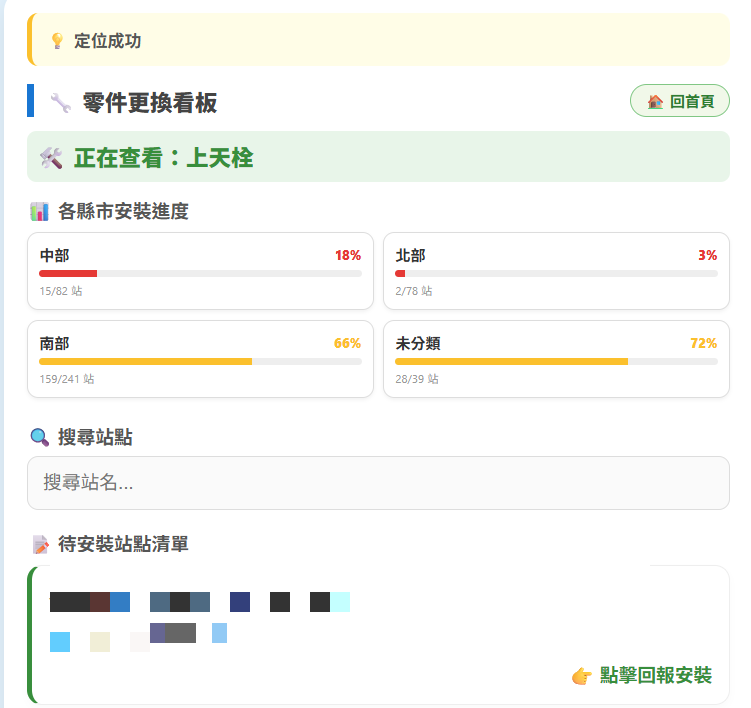
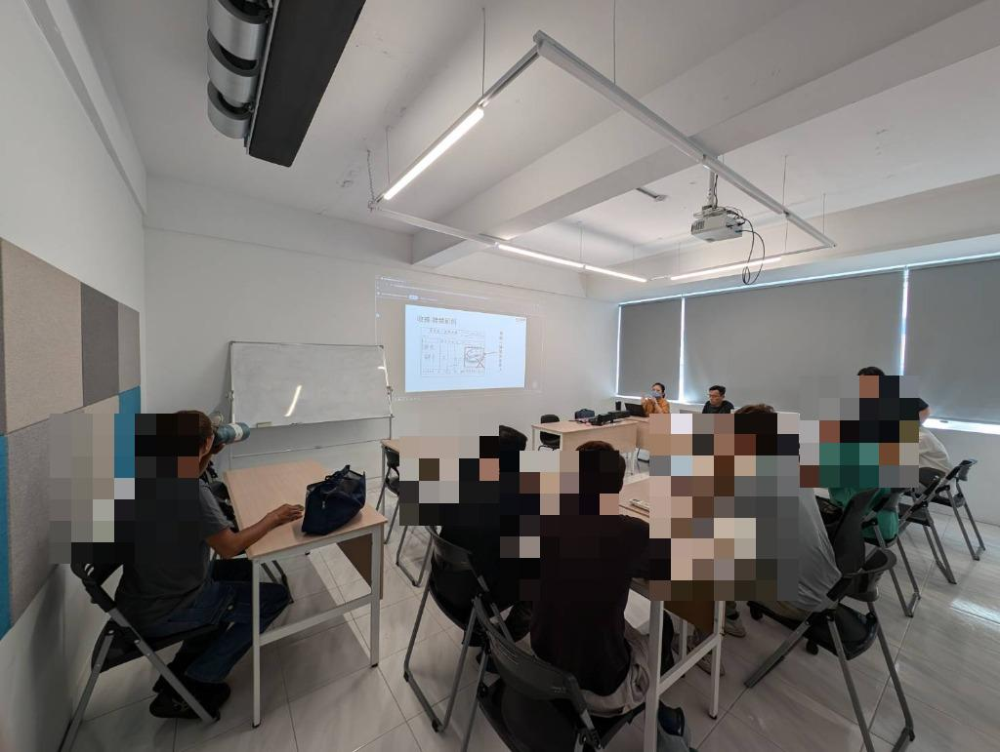

Operations Lead & Automation Developer
具備超過 6 年的機台維護與專案管理能力。習慣從第一線的維修痛點找解方，在營運管理期間，透過自學導入 GAS 與 AI 工具開發自動化流程，替團隊省下大量重複性作業的時間。除了硬體保養與參數調校，也常擔任現場與研發端溝通的橋樑，從第一線角度回饋並優化機台設計。期望將過去在軟硬體整合、設備升級與現場管理的實務經驗，帶入設備工程領域。
【資訊安全說明】 為保護原始企業數據隱私，以下作品集之數據皆經過去識別化 (Anonymization) 與模擬化 (Mock Data) 處理。
串接機台故障數據，即時監控關鍵績效指標 (KPI)，包含解決率、MTTR 與設備稼動率，有效掌握團隊維修效率與設備健康度。
自主開發 Web App 取代傳統表單，整合 Google Maps API 與雲端資料庫，實作零件更換看板、區域安裝比例統計與外勤距離導引功能。有效解決外勤回報痛點，極大化維修數據即時性。

每月針對課內同仁進行自動化工具使用、設備故障排除及參數維護之專題訓練。主導技術手冊編寫與 SOP 優化，建立團隊學習文化，顯著縮短新進技術人員的入職週轉期。

運用 Gemini、Claude、Cursor 等 AI 開發工具，進行程式碼撰寫與專案建構，展現快速學習與應用新技術解決實務問題的能力。